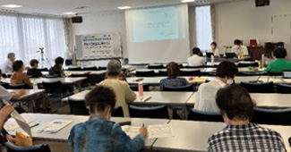
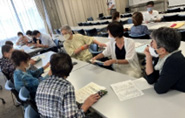

埼玉県委託事業 2022年度県内消費者団体全体研修会を開催しました
8月31日、埼玉県委託事業「県内消費者団体全体研修会」を、埼玉会館およびオンラインで開催し、18団体51人（会場24人、オンライン27人）が参加しました。昨年度の地区別研修会に続き、実参加とオンライン併用で開催、学習と短い時間でしたが、3年振りに団体活動交流を実施しました。
「埼玉県環境基本計画を学ぶ ～わたしたちのくらしの中でできること～」と題して、今年度策定された埼玉県環境基本計画について、埼玉県環境部環境政策課主幹 塩出貴史さんにお話しいただきました。
環境政策課 塩出貴史さん
埼玉県環境基本計画の基本的事項としての位置づけや策定の経緯、長期的目標や施策展開の基本的な考え方を踏まえながら、8つの施策の方向に従って説明いただきました。説明を受けて、グループでわたしたちにできることを話し合い、報告を共有しました。
学習会後は、事前に提出いただいた団体活動調査表をもとに、3年ぶりに団体活動報告をおこない、交流しました。

参加者からは、埼玉県環境基本計画について、わかりやすい資料で理解が深まった、自団体でも出前講座などを活用して環境基本計画について学びたいなどの感想が寄せられました。また、団体活動交流について、他団体の話が聞けてよかった、団体同士のつながりがあると、もっと活動も進むのではないかなどの感想が寄せられました。

わたしたちにできることを話し合いました